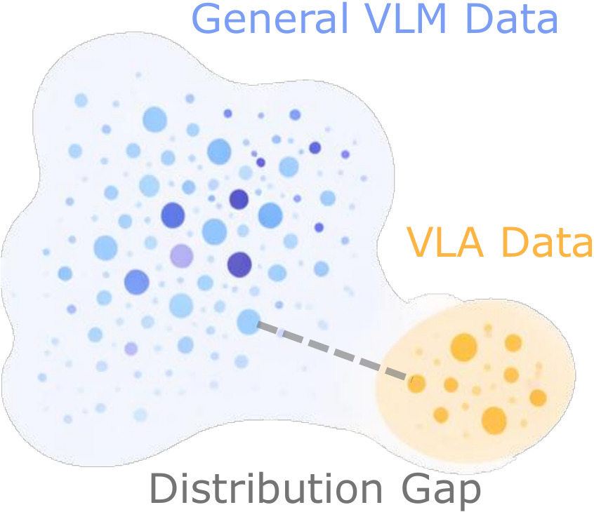
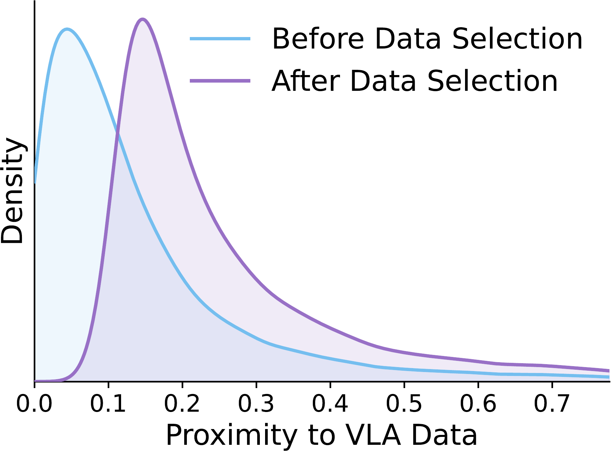
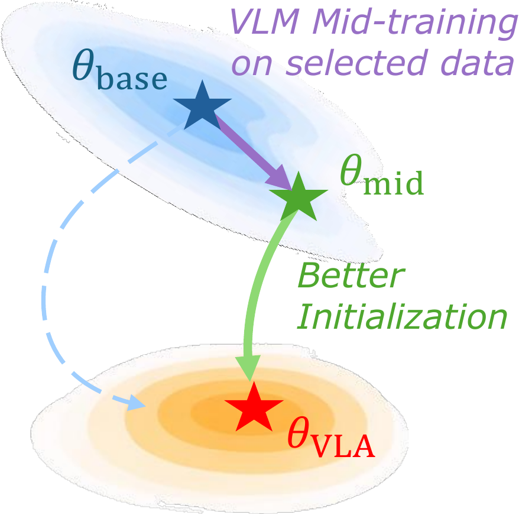
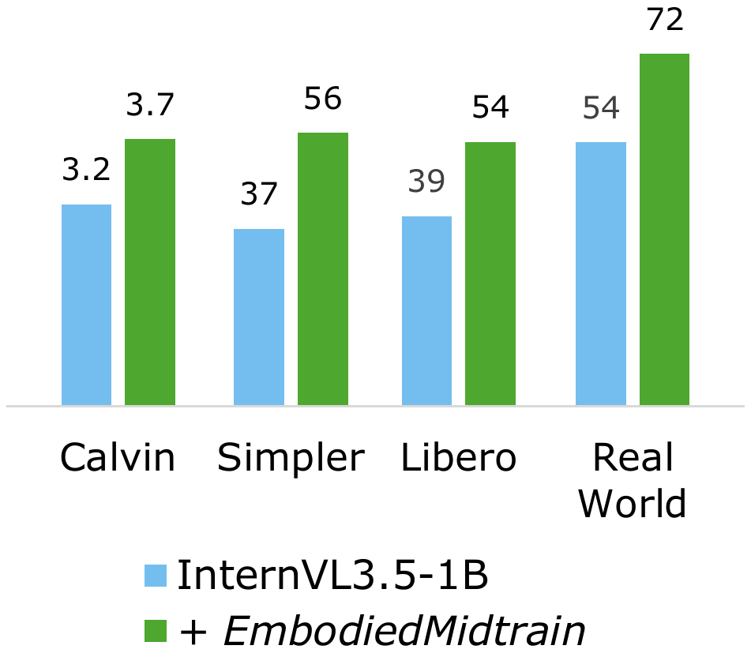
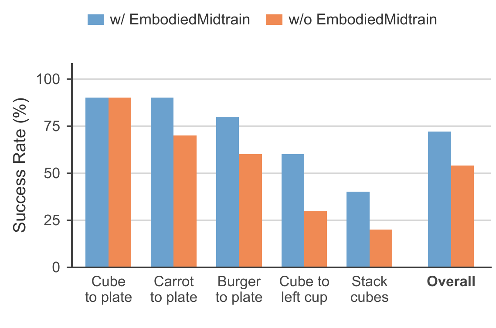
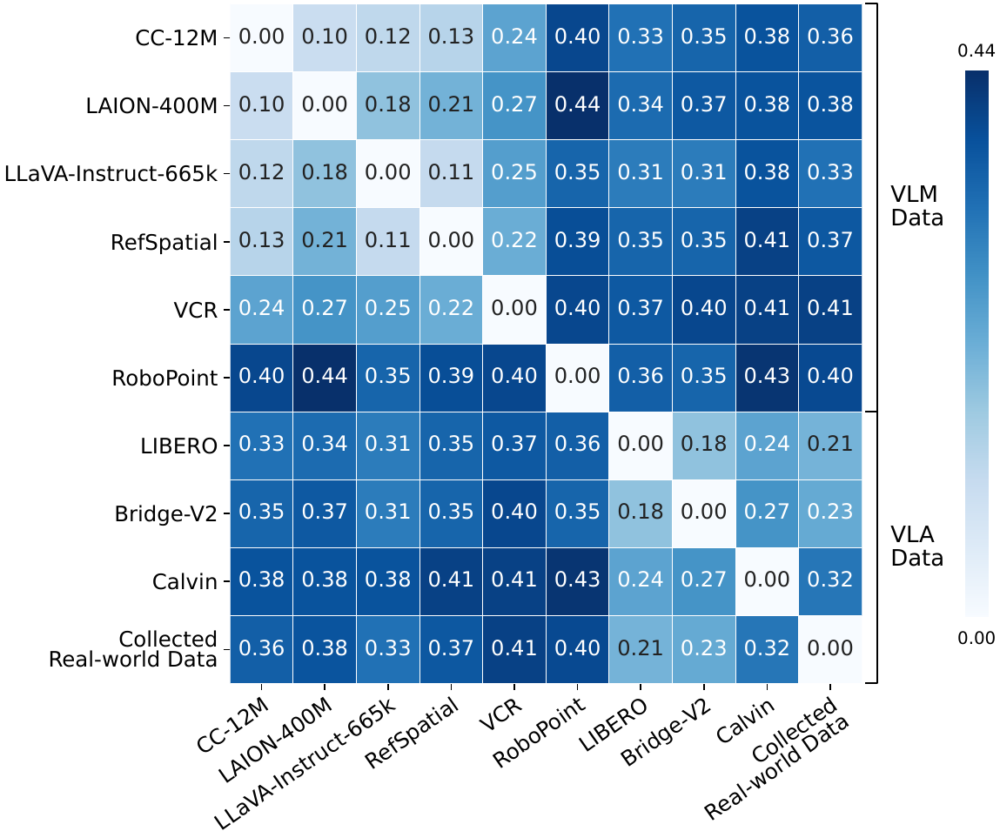
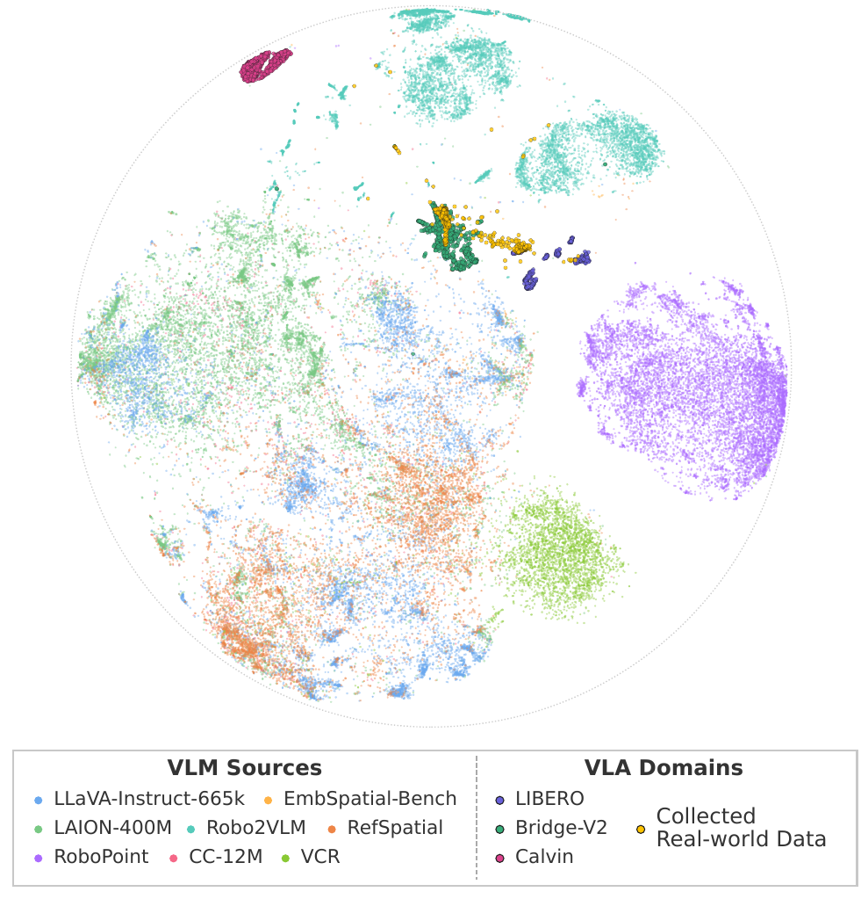
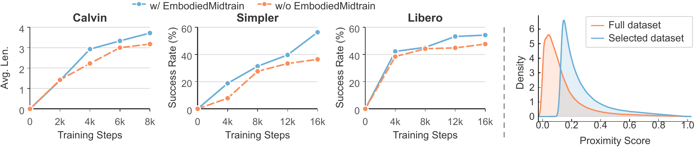
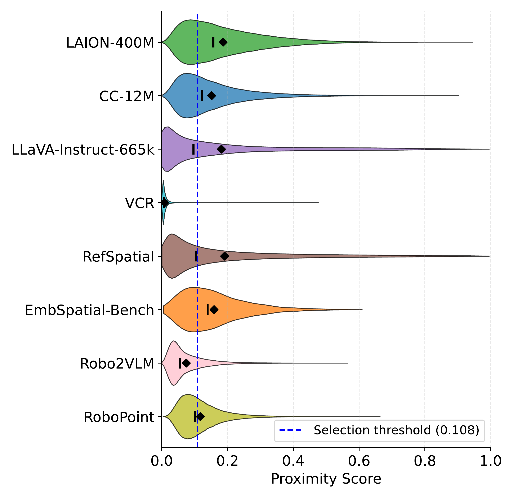
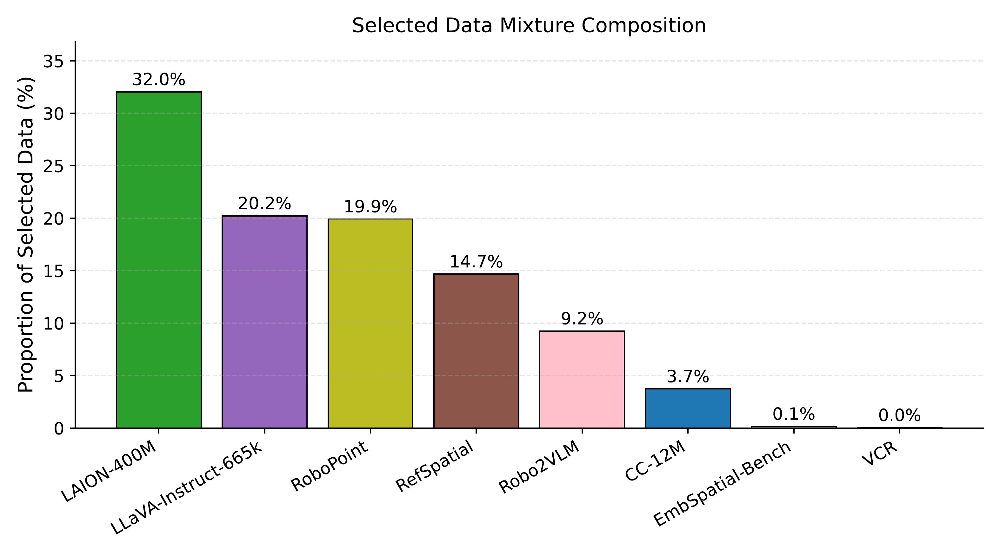

A better VLM initialization for VLAs: mid-train on the VLM data that lies closest to the VLA domain.




TL;DR — Most VLAs initialize from off-the-shelf VLMs that are not adapted to the embodied domain. EmbodiedMidtrain bridges this gap with a lightweight learnable proximity estimator that selects the most VLA-aligned samples from a large VLM pool, producing EmbodiedMidtrain-1M, a mid-training dataset that consistently improves downstream VLA performance across VLM backbones, VLA action heads, and target tasks — in simulation and on a real robot.
We fine-tune VLAs on 50 teleoperated demonstrations per task and evaluate 10 rollouts per task on a Franka Research 3 arm with a Robotiq 2F-85 gripper. The same mid-trained checkpoint used in our simulation experiments — selected with simulation VLA data only — lifts the overall real-world success rate from 54% to 72% on the InternVL3.5-1B backbone. Below are paired rollouts from our evaluation runs: for each task, the same scene is attempted by the VLA fine-tuned from the off-the-shelf VLM (left) and from the VLM after EmbodiedMidtrain (right).
Videos play at 3× real time. All rollouts are from the released real-robot evaluation runs, unedited.
Not every pair is a win: both models succeed on 90% of the cube-to-plate rollouts, and some trials fail for both. The pair below shows one shared success and one shared failure on the same task.

Sim-selected data transfers to the real world. The proximity estimator only ever sees simulation VLA data (CALVIN, Bridge, LIBERO), yet the resulting mid-trained VLM improves four of five real-robot tasks.
Better grasping and placement. Qualitatively, the mid-trained policy establishes firmer grasps, lifts objects high enough to clear obstacles, and maintains its grip through transport.
+18 points overall. Success over 50 evaluation rollouts rises from 54% to 72%, with the largest gain (+30) on the cube-to-cup task.
Vision-Language-Action Models (VLAs) inherit their visual and linguistic capabilities from Vision-Language Models (VLMs), yet most VLAs are built from off-the-shelf VLMs that are not adapted to the embodied domain, limiting their downstream performance. In this work, we propose EmbodiedMidtrain to bridge the gap between VLMs and VLAs. We first characterize the data distribution gap between them, showing that VLA data occupy compact regions that are largely separated from the broader VLM distribution, while the degree of alignment varies substantially both across and within VLM data sources. Then, we build a mid-training data engine that leverages a lightweight learnable proximity estimator to select the most VLA-aligned candidates from a large VLM pool, and produce EmbodiedMidtrain-1M, a VLM dataset that we further use to mid-train the VLM before downstream VLA fine-tuning. Experiments on both simulated robot manipulation benchmarks and real-world tasks show consistent VLA performance gains over off-the-shelf checkpoints across VLM backbones and VLA action heads. These gains extend to downstream tasks not used to guide data selection. Further analysis reveals that mid-training provides a stronger initialization for VLA fine-tuning, with gains emerging from the earliest steps and widening throughout training. Moreover, the data engine captures both dataset-level and sample-level alignment signals, favoring spatial reasoning over text-centric tasks while preserving the diversity of the VLM data. We will release all code, data and models for future research.
Since most VLAs inherit their representations from VLM pretraining, the quality of this initialization is fundamentally shaped by the data the VLM was trained on. We represent VLM and VLA data in a shared feature space (last hidden states of InternVL3.5) and quantify the distance between each pair of datasets with Maximum Mean Discrepancy (MMD):
where $k(x,y) = \exp\!\big(-\|h(x) - h(y)\|_2^2 \,/\, 2\sigma^2\big)$ is a Gaussian RBF kernel with bandwidth $\sigma$ set via the median heuristic.


The gap is large and clear. Cross-group MMD distances are consistently larger than within-group distances, and VLA datasets form compact clusters detached from the main regions occupied by VLM data.
The gap is heterogeneous. Some VLM sources — and some samples within each source — lie noticeably closer to the VLA domain than others, so alignment is better described as a spectrum than a binary split.
Implication. Preparing VLMs for embodied tasks requires reshaping the training distribution toward the VLA domain — with sample-wise selection, not just coarse dataset-level mixture adjustment.
We construct a candidate pool spanning general VLM data (LAION-400M, CC-12M with BLIP captions, LLaVA-Instruct-665k, VCR) and embodied-oriented VLM data (RefSpatial, EmbSpatial-Bench, Robo2VLM, RoboPoint), and select at the sample level to account for variation within each source.
Given a selection budget $K$ and a scoring function $s$, we select the subset of the candidate pool $\mathcal{D}_{\mathrm{VLM}}$ with the highest aggregate proximity to the target VLA corpus $\mathcal{D}_{\mathrm{VLA}}$:
Framing sample scoring as domain-membership classification, the population-optimal score under equal domain priors is monotonically increasing in the density ratio between the two domains:
We instantiate the estimator as a linear scoring function $f$ on the frozen VLM’s last-token, last-hidden-state representation $\phi(x)$, followed by a sigmoid: $\; s(x) = \sigma\big(f(\phi(x))\big)$. It is trained with VLA samples as positives and candidate VLM samples as negatives under binary cross-entropy:
Scoring the full pool and retaining the top $K{=}1.28$M samples produces EmbodiedMidtrain-1M, the corpus used to mid-train the VLM before VLA fine-tuning. The pipeline is lightweight, effective, and requires no architectural changes to the underlying VLM or VLA.
Following the VLM4VLA evaluation protocol, we fine-tune each VLM into a VLA with an identical two-branch MLP action head and robot data, and evaluate on CALVIN ABC-D (avg. consecutive tasks completed), SimplerEnv-Bridge and LIBERO-10 (success rates).
| Model | Size | CALVIN Avg. Len.↑ | SimplerEnv↑ | LIBERO↑ |
|---|---|---|---|---|
| Expert VLA Baselines* | ||||
| OpenVLA (Llama-2) | 7.7B | 2.548 | 4.2 | 53.7 |
| π0 (PaliGemma-1) | 3.1B | 3.509 | 60.4 | 46.0 |
| Off-the-shelf VLM Baselines* | ||||
| Qwen2.5-VL-3B | 3.8B | 3.856 | 48.0 | 43.0 |
| Qwen2.5-VL-7B | 8.3B | 4.057 | 46.8 | 45.0 |
| Qwen3-VL-4B | 4.4B | 3.943 | 56.3 | 44.4 |
| Qwen3-VL-8B | 8.8B | 4.035 | 58.3 | 46.2 |
| Qwen3-VL-30B-A3B | 30B-A3B | 4.075 | 44.8 | 46.8 |
| PaliGemma-1 | 2.9B | 3.506 | 55.3 | 44.2 |
| PaliGemma-2 | 3.0B | 3.406 | 57.3 | 46.2 |
| Kosmos-2 | 1.7B | 3.096 | 60.4 | 55.0 |
| VLM with EmbodiedMidtrain (Ours) | ||||
| Qwen3-VL-2B | 2.1B | 3.205 | 38.5 | 33.8 |
| + EmbodiedMidtrain | 2.1B | 3.584 | 45.8 | 40.2 |
| InternVL3.5-1B | 1.1B | 3.173 | 36.5 | 39.0 |
| + EmbodiedMidtrain | 1.1B | 3.714 | 56.3 | 54.2 |
Table 1 (abridged): main results across CALVIN ABC-D, SimplerEnv-Bridge, and LIBERO-10. * Results for the baselines are reported by VLM4VLA under the same framework. Per-subtask CALVIN breakdowns are in the paper.
Across VLM backbones. Mid-training Qwen3-VL-2B on the same data selected using InternVL3.5-1B’s feature space improves all three benchmarks — no new proximity estimator or re-selection needed.
Across VLA action heads. Beyond the two-branch MLP head, EmbodiedMidtrain improves OpenVLA-OFT-style parallel decoding (36.5 → 49.0 on SimplerEnv) and π0-style flow matching (88.4 → 92.4 on LIBERO) for InternVL3.5-1B, with similar gains on Qwen3-VL-2B.
Across target tasks. Holding LIBERO entirely out of the selection targets retains 95% of the full method’s gain on LIBERO-10 (53.4 vs. 54.2), and the real-robot results above use selection guided by simulation data only.
And it is not a compute artifact. At matched total FLOPs, spending the extra budget on longer VLA fine-tuning yields 43.8 / 45.8 (SimplerEnv / LIBERO), far below mid-training’s 56.3 / 54.2.

The mid-trained model leads from the earliest fine-tuning checkpoints, and the gap widens rather than narrows over training — evidence that proximity-based mid-training yields a backbone better suited to VLA learning, not a transient warm start.

The estimator assigns clear dataset-level preferences (RefSpatial highest, VCR lowest) while also performing fine-grained sample-level selection within every source: it favors visual reasoning that transfers to embodied control — spatial grounding, affordances, object relations — over text-centric content, without any manual domain expertise. The selected mixture preserves the diversity of the original pool (uniformity 1.93 vs. 1.96 for the full general-VLM pool), reshaping the distribution toward the VLA domain without collapsing it.

Random sampling from the candidate pool consistently underperforms the learned estimator, showing that the gains come from identifying the aligned subset, not merely from additional mid-training. Hand-crafted proximity metrics capture VLA alignment only partially; the learned estimator is the most robust and transferable signal.
| Selection strategy | CALVIN↑ | SimplerEnv↑ | LIBERO↑ |
|---|---|---|---|
| Random selection | 3.398 | 43.8 | 48.4 |
| Feature-space avg. distance | 3.126 | 53.1 | 51.2 |
| VLA-conditioned perplexity | 3.159 | 55.2 | 48.0 |
| Delta perplexity | 3.221 | 39.6 | 54.2 |
| Learned estimator (Ours) | 3.714 | 56.3 | 54.2 |
Ablation of selection strategies for mid-training the InternVL3.5-1B backbone.
@article{du2026embodiedmidtrain,
title={EmbodiedMidtrain: Bridging the Gap between Vision-Language
Models and Vision-Language-Action Models via Mid-training},
author={Du, Yiyang and Guo, Zhanqiu and Zhang, Haochen and
Macaluso, Annabella and Ye, Xin and Ren, Liu and
Bisk, Yonatan and Xiong, Chenyan},
journal={arXiv preprint arXiv:2604.20012},
year={2026}
}